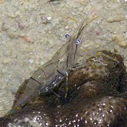
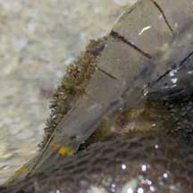
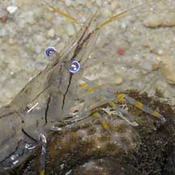
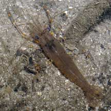
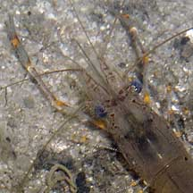
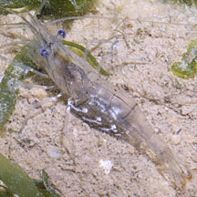
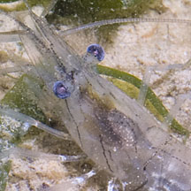
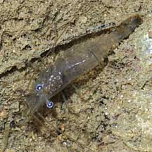
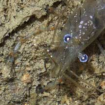
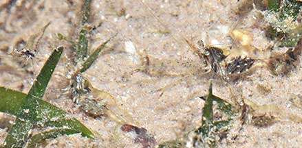

|
|
| shrimps text index | photo index |
| Phylum Arthropoda
> Subphylum Crustacea > Class
Malacostraca > Order Decapoda
> prawns and shrimps > Family Palaemonidae |
| Glass
shrimp Palaemon sp.* Family Palaemonidae updated Jan 2020 Where seen? This transparent shrimp is sometimes seen on some of our shores. At low tide in pools, in small groups on rubble and reefs. Also on sandy silty shores among seaweeds, as well as near mangroves. Features: About 1-2cm long. The body is transparent, plain or with thin dark bands across the body. Has a sharp pointed 'nose' and the eyes are not very far apart. Pincers long. Pincers and walking legs with yellow joints. Some have a pair of yellow or orangey dots near the tail. Several different species of shrimps might have this appearance. |
|
 St. John's Island, May 06 |
 |
 |
|
 Sungei Buloh Wetland Reserve, Nov 03  |
 Pasir Ris, Aug 11  |
 Sisters Island, Dec 08  |
*Species are difficult to positively identify without close examination.
On this website, they are grouped by external features for convenience of display.
| Glass shrimps on Singapore shores |
On wildsingapore
flickr
|
| Other sightings on Singapore shores |
 Several with eggs. St John's Island, Oct 20 Photo shared by Loh Kok Sheng on facebook. |
Links
|